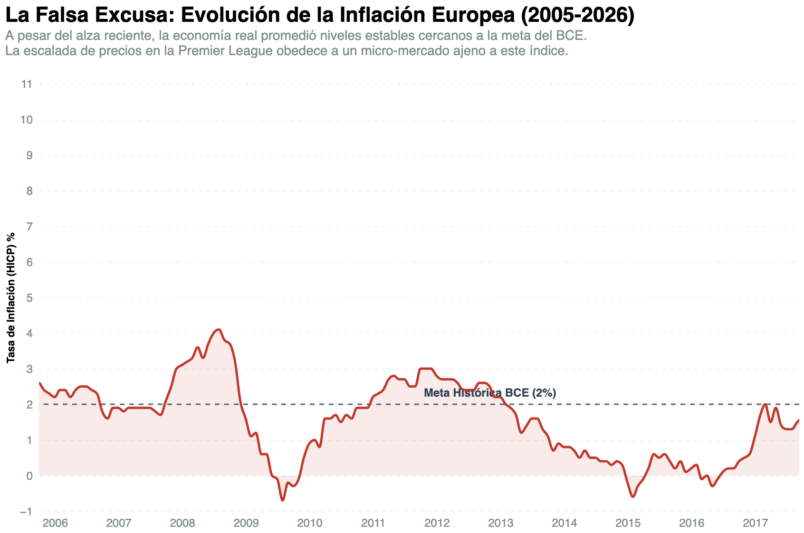

En el discurso de la Premier League, la palabra "inflación" funciona como un comodín. Los clubes la usan en dos frentes distintos para armar un relato que los libre de responsabilidad y normalice que todo cueste cada vez más, sea en los fichajes o en lo que cobran de diferentes formas: ya sea por entradas, camisetas, abonos, etc.
Por un lado, cuando los directivos tienen que justificar el pago de 80 millones de euros por un jugador de mediana edad, hablan de un "mercado inflado". En el fondo saben que no se refieren a la economía real, sino a la dinámica de su propio negocio por la llegada de capitales extranjeros y la lluvia de millones que dejan los derechos de televisión. Pero, por otro lado, cuando esos mismos clubes anuncian que subirán el precio de las entradas, los abonos o las camisetas, el discurso cambia. Ahí sí se escudan en la economía mundial, culpando a las presiones inflacionarias globales y al aumento de los costos para mantener el estadio (como es el caso del césped de la cancha del Barcelona).
Al usar la misma palabra para mezclar dos cosas totalmente distintas, las directivas lograron convencer al público de que el encarecimiento del fútbol es algo inevitable, casi un capricho de la economía global.
Pero los datos dicen otra cosa. El Índice Armonizado de Precios de Consumo (HICP) del Banco Central Europeo demuestra que, durante casi veinte años, la inflación real de la Eurozona fue prácticamente plana, con un promedio de apenas 2,14%. En ese mismo tiempo, el fútbol inglés pagaba de forma sistemática el "Impuesto Premier", un sobreprecio que ronda el 30% por encima del valor real de los jugadores.

La economía europea no justifica los números del fútbol inglés. El mercado de fichajes no sube por el costo de la vida, sino por una distorsión generada por los propios clubes, que al tener más dinero que nunca terminan compitiendo de forma desesperada por los mismos jugadores. No es que el mundo haya encarecido el fútbol. Es que la Premier League, encerrada en su propia burbuja, decidió encarecerse a sí misma.
Volver al repositorio principal del proyecto en GitHub.